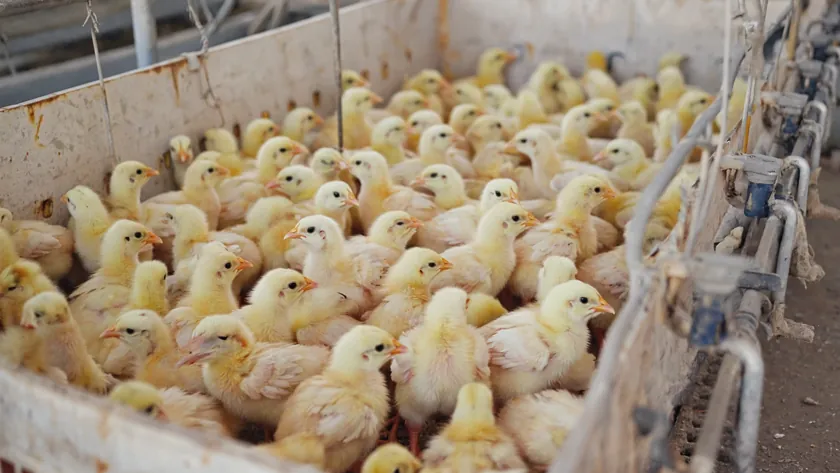

日本／2022年ほか／国会会議録・農林水産省資料
卵を産まない雄のひなは、生まれてすぐに殺される
卵をとるために育てる鶏では、同じように卵からかえっても、雄のひなは生まれてすぐに殺される。雄は卵を産まない。2022年11月、参議院で農林水産省の担当者が、日本で行われていることをそう説明した。
何羽が殺されたのか。その数を直接調べた全国統計はないと、担当者は答えた。答弁で挙がった約1億1千万羽は、2021年に日本で出荷された雌のひなの推計数だった。雄もほぼ同じ数が生まれたと考えられる、というのが国の説明だ。
農林水産省の資料には、ひながかえる前に卵の中で雌雄を見分け、雄の卵をふ化させない方法も載っている。
写真を見る（動物の傷や飼育環境を扱います）

この記述を原資料で確かめる
「卵をとるために育てる鶏では、同じように卵からかえっても、雄のひなは生まれてすぐに殺される。」
第210回国会参議院農林水産委員会（2022年11月8日）発言134、渡邉洋一政府参考人の答弁。卵の中で判別する方法は同発言138と農林水産省資料7の冊子3頁。 原資料を開く
約1億1千万羽は雌ひなの出荷数の推計。雄の殺処分数としては扱わない。